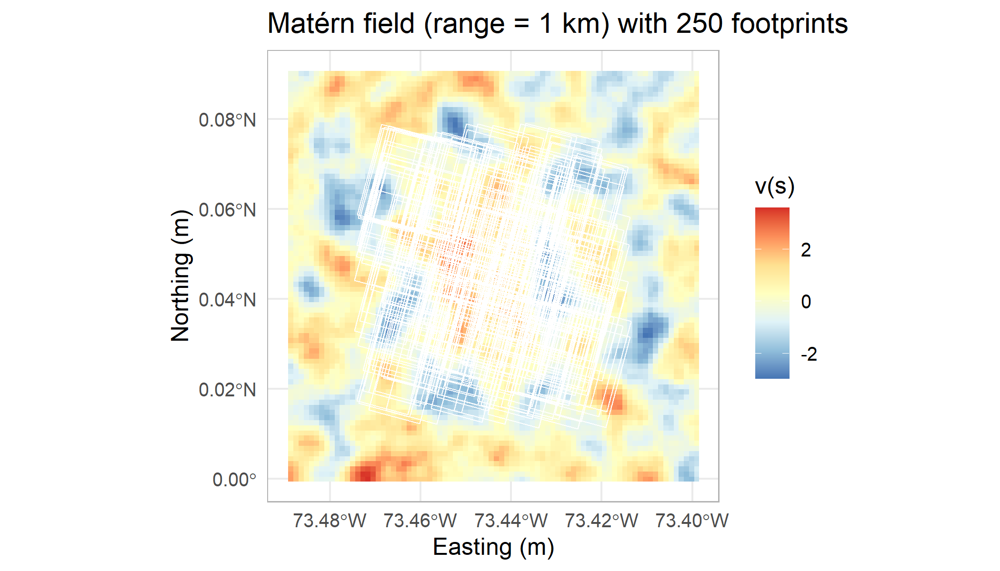
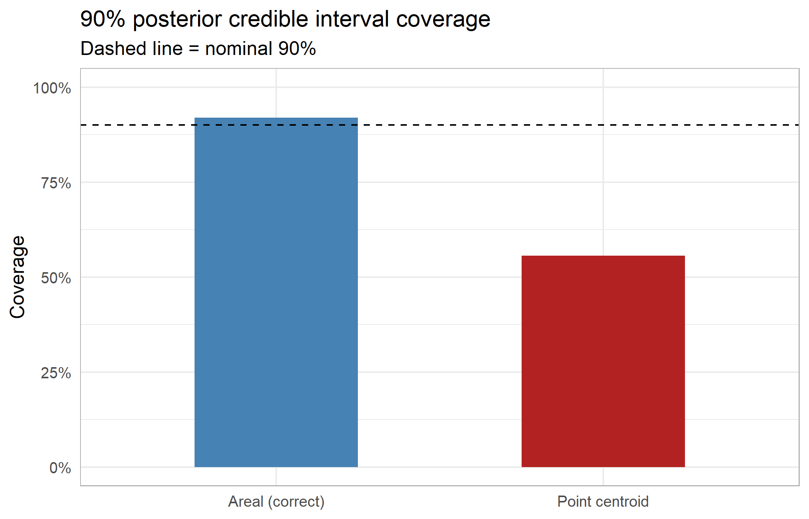
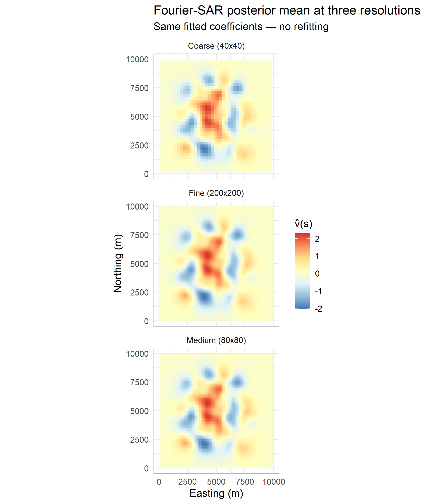

Area-to-area kriging with basis functions
spatial statistics
downscaling
bayesian
kriging
Satellite observations are areal averages, not point measurements. Basis function methods reduce the intractable double-integral problem of area-to-area kriging to a single pass of cheap single integrals — provided the prior is chosen cleverly.
In a previous post, I examine how kriging and Gaussian process regression can be formulated as Bayesian linear regression. The posterior mean is the kriging predictor. This post is about what happens when observations are areas rather than points — the area-to-area (ATA) kriging problem — and why the choice of basis functions is not incidental but central to making the problem tractable.
The naive approach is expensive
Classical point-referenced kriging predicts \(v(s_0)\) from observations \(y_1, \ldots, y_n\) using the covariance structure of the field. When each observation \(y_i\) is actually an areal average over a footprint \(D_i\),
\[y_i = \frac{1}{|D_i|}\int_{D_i} v(s)\,ds + \varepsilon_i\]
the covariance between two observations involves a double integral over each pair of footprints:
\[\mathrm{Cov}(y_i, y_j) = \frac{1}{|D_i||D_j|}\iint_{D_i \times D_j} C(s,t)\,ds\,dt\]
With \(n\) observations this requires \(O(n^2)\) double integrals — one for every pair. For \(n = 10{,}000\) satellite soundings and footprints that may be kilometres across, this is not just slow but often treated as a non-starter. That would require 100 million double integrals just to build the covariance matrix. Pretending each footprint is a point at its centroid avoids the double integrals, but as we show below it miscalibrates uncertainty in a systematic way.
None of the twelve methods in the Heaton et al. (2019) competition were designed for areal observations. They are all point methods. This is not a critique — the competition dataset happened to be on a regular grid with small effective footprints — but it means the ATA problem is genuinely open for the irregular footprint settings common in satellite remote sensing. However, the vast majority of the big-\(n\) point kriging methods in the competition are also basis function methods, which, as I will argue, means they are likely extendable to areal data.
Basis functions reduce \(O(n^2)\) to \(O(n)\)
A basis function approach dissolves the double-integral problem. Represent the field as \(v(s) \approx \sum_k \beta_k \phi_k(s)\) and substitute:
\[y_i = \frac{1}{|D_i|}\int_{D_i} \sum_k \beta_k \phi_k(s)\,ds + \varepsilon_i = \sum_k \beta_k \underbrace{\frac{1}{|D_i|}\int_{D_i} \phi_k(s)\,ds}_{A_{ik}} + \varepsilon_i\]
This gives the Bayesian linear model \(y = A\beta + \varepsilon\) with prior \(\beta \sim \mathcal{N}(0, Q^{-1})\). Each entry \(A_{ik}\) requires a single integral of one basis function over one footprint — \(O(nK)\) integrals total, where \(K\) is the number of basis functions. The cross-covariance structure between all pairs of footprints is handled implicitly through the prior: the implied covariance between \(y_i\) and \(y_j\) is \(A_i Q^{-1} A_j^\top\), computed as matrix multiplication rather than double integration.
This reduction from \(O(n^2)\) double integrals to \(O(nK)\) single integrals is not free — it depends entirely on \(Q\) being chosen to accurately represent the covariance structure of the field. A poorly chosen prior produces a model that is computationally cheap but statistically wrong. The choice of basis and prior is everything.
What makes a good basis?
A desirable property is that the basis and prior \(Q\) should correspond to a known and well-understood covariance model so that parameters have interpretable meaning and can be estimated from data. Secondarily, it is a very convenient property if the basis has closed-form integrals.
The SPDE approach of Lindgren, Rue, and Lindström (2011) satisfies both. It begins from the observation that a Matérn Gaussian random field is the stationary solution to the stochastic partial differential equation
\[(\kappa^2 - \Delta)^{\alpha/2} v(s) = \mathcal{W}(s)\]
where \(\Delta\) is the Laplacian, \(\mathcal{W}(s)\) is Gaussian white noise, \(\kappa\) controls the range, and \(\alpha = \nu + d/2\) for smoothness \(\nu\) in \(d\) dimensions. Discretizing this equation via finite elements on a triangular mesh produces piecewise linear tent functions as the basis, and the precision matrix \(Q\) is sparse and derived directly from the SPDE operator — so it correctly represents a Matérn covariance by construction. Lindgren also provides results for using indicator functions on a raster grid.
The single integrals \(A_{ik} = \frac{1}{|D_i|}\int_{D_i} \phi_k(s)\,ds\) for tent functions or indicator functions reduce to polygo intersection areas, computable exactly via standard computational geometry. No quadrature, no approximation error, no dependence on footprint resolution.
It is noteworthy that many other basis function types are easy to integrate. For instance, sinusoidal bases have closed-form integrals over triangulations, making periodic or Fourier bases feasible (but dense); while compactly supported polynomials such as used in LatticeKrig are also promisingly adapted to the areal setting.
Why we’ll start with it: SPDE won the satellite dataset
In Heaton et al. (2019), cutting edge spatial prediction methods faced-off on real and simulated data–see my writeup for a summary. The SPDE/INLA method achieved the best RMSE on the real satellite surface temperature data (1.53 RMSE) and was a top-performer on their simulation both in terms of speed and accuracy. Not only this, but their results hold for regular lattices, whose integrals are trivial to compute using area calculations available in common spatial packages like sf.
While it’s a clear first-attempt to port to the areal setting, several methods are likely low-hanging-fruit as well. For example, another top performer for point-referenced data, LatticeKrig, uses a similarly motivated basis structure (with an intended spatially autoregressive prior) and would likely be easy to import to an areal setting. LatticeKrig uses basis functions are radial polynomials–which adds a step for integration beyond areal averages, but would not be challenging to integrate over triangulations.
The connection to SAR models on regular grids
Lindgren, Rue, and Lindström (2011) is primarily presented as a triangulation method, but they also establish a clean result for regular grids that we will use. Using indicator functions as a basis is highly interpretable in terms of overlapping geometries over target regions.
On a regular grid with spacing \(\delta\), the SPDE \((\kappa^2 - \Delta)^{\alpha/2}v = \mathcal{W}\) is discretized via finite differences rather than finite elements. For \(\alpha = 2\) (corresponding to \(\nu = 1\) in two dimensions), the discrete Laplacian at interior grid point \(s_i\) is
\[\Delta v(s_i) \approx v(s_{i-1,j}) + v(s_{i+1,j}) + v(s_{i,j-1}) + v(s_{i,j+1}) - 4v(s_i)\]
Substituting into the SPDE gives
\[(\kappa^2 + 4)v(s_i) - \sum_{j \in N(i)} v(s_j) = \mathcal{W}(s_i)\]
which in matrix form is \(Bv = \varepsilon\) where \(B_{ii} = \kappa^2 + 4\) and \(B_{ij} = -1\) for rook neighbours. The precision matrix \(Q = B^\top B / \sigma^2\) is exactly the precision of a simultaneous autoregressive (SAR) model with rook neighbourhood structure. This is not an approximation — the finite-difference discretization of the \(\alpha=2\) SPDE is the rook SAR model.
The parameter correspondence is explicit. The SAR model has autoregressive parameter \(\rho\) and the SPDE has range parameter \(\kappa\), related by
\[\kappa^2 = \frac{4(1-\rho)}{\rho\,\delta^2}\]
which gives the range in terms of \(\rho\) and grid spacing \(\delta\):
\[\text{range} = \sqrt{8/\kappa^2} = \delta\sqrt{\frac{2\rho}{1-\rho}}\]
This means fitting a SAR model and translating its \(\rho\) back to a Matérn range is exact for \(\alpha=2\), and approximately valid for other smoothness values.
For the basis function representation on a regular grid the natural choice is indicator functions — \(\phi_j(s) = \mathbf{1}(s \in D_j)\), one per grid cell. Then \(A_{ik} = |D_i \cap D_k| / |D_i|\) is the area overlap fraction, computable exactly via polygon intersection. The SAR precision \(Q = B^\top B / \sigma^2\) is the correct prior for this basis under the SPDE connection.
Simulation: does the area correction matter?
We simulate a Matérn(\(\nu=1\)) field with range 3 km over a 10×10 km domain, then generate 250 satellite-style footprint observations — roughly 1.3 km × 2.3 km parallelograms at 15° rotation, representative of a low-Earth-orbit sounder. We fit two versions of the same SAR-prior model:
- Areal model: \(A_{ik}\) = area overlap fraction of footprint \(i\) and cell \(k\) — the correct observation model.
- Point model: \(A_{ik} = 1\) for the single cell containing the footprint centroid, 0 elsewhere — the standard approximation used by all Heaton methods.
Both use the same prior (tuned via marginal likelihood on the areal model) and the same noise variance \(\phi\).

The point approximation systematically miscalibrates uncertainty. Footprints spanning regions of high spatial variability are most affected — the observation model treats a 3 km footprint as if it were a point, ignoring the spatial averaging that reduces the effective noise. The areal model, because it correctly propagates the footprint geometry into \(A\), gives calibrated intervals at the nominal rate.
Swapping to a Fourier basis: free given the SAR fit
Once the SAR parameters \((\rho, \phi)\) are estimated, there is a natural alternative basis that inherits the same covariance structure: the Neumann cosine functions
\[\phi_{\mathbf{j}}(s) = \prod_{k=1}^2 \sqrt{2-\delta_{j_k,1}}\, \cos\!\left(\frac{(j_k-1)\pi s_k}{L_k}\right)\]
These diagonalize the SAR precision matrix exactly — the prior \(Q\) is diagonal in this basis, with eigenvalues given analytically by the SAR parameter \(\rho\):
\[Q_{\text{Fourier},\mathbf{j}} = \frac{(1-\rho\lambda_{W,\mathbf{j}})^2}{\tau^2}\]
where \(\lambda_{W,\mathbf{j}}\) are the eigenvalues of the rook weight matrix \(W\). No re-estimation is needed: \(\rho\) and \(\phi\) translate directly from the SAR fit.
The key advantage for ATA kriging is that the integrals \(A_{ik} = \frac{1}{|D_i|} \int_{D_i} \cos(\omega_x s_x)\cos(\omega_y s_y)\,ds\) have exact closed forms via the identity \(\cos(A)\cos(B) = \frac{1}{2}[\cos(A-B)+\cos(A+B)]\) and the complex exponential triangle formula. Like the SPDE/INLA tent function integrals, these are exact — no quadrature error, no dependence on footprint resolution.
The Fourier basis also decouples prediction resolution from fitting resolution. The SAR raster model is tied to an 80×80 grid; the Fourier model with the same fitted parameters predicts at any resolution by evaluating the basis functions at new locations, with no refitting required.

The three panels show predictions at 40×40, 80×80, and 200×200 resolution from the same fitted model. Adding resolution costs only basis function evaluations, not model re-estimation (though there may be some open questions as to what resolution of SAR model is necessary to get good estimates of these parameters, they still inherit properties of whatever procedure is used for the SAR model, such guarantees from maximum likelihood).
Summary
The ATA problem reduces from \(O(n^2)\) double integrals to \(O(nK)\) single integrals whenever the covariance structure is encoded in a prior \(Q\) on basis coefficients rather than built directly from \(C(s,t)\). Two things are convenient for this to work: the basis functions must be integrable over footprints in closed form (or via quadrature), and \(Q\) must adequately represent the target covariance.
The SPDE framework of Lindgren, Rue, and Lindström (2011) satisfies both conditions for Matérn fields — by construction, since \(Q\) is derived directly from the SPDE operator. On a regular grid this recovers the SAR model exactly, establishing a clean parameter correspondence with classical lattice statistics. The Fourier basis inherits this correspondence and adds resolution flexibility, at the cost of a dense rather than sparse \(A\) matrix.
| Areal SAR | Point SAR | Fourier-SAR | |
|---|---|---|---|
| Observation model | Correct | Approximate | Correct |
| Integration | Exact (overlap fractions) | None (centroid) | Exact (analytic) |
| Coverage | Calibrated | Miscalibrated | Calibrated |
| Resolution | Fixed grid | Fixed grid | Arbitrary |
| Prediction at new resolution | Refit | Refit | Free |
| Prior | SAR / Matérn | SAR / Matérn | Diagonal / Matérn |
References
Heaton, Matthew J et al. 2019. “A Case Study Competition Among Methods for Analyzing Large Spatial Data.” Journal of Agricultural, Biological and Environmental Statistics 24 (3): 398–425.
Lindgren, Finn, Håvard Rue, and Johan Lindström. 2011. “An Explicit Link Between Gaussian Fields and Gaussian Markov Random Fields: The Stochastic Partial Differential Equation Approach.” Journal of the Royal Statistical Society: Series B 73 (4): 423–98.